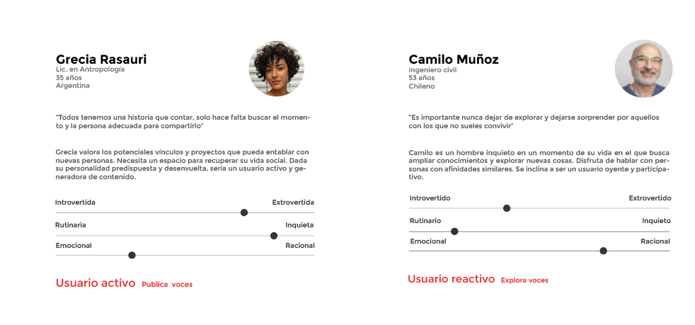

Good Talk social voice app experience
The project explores how social apps shape the way we interact with strangers to propose a digital social experience based on talking and listening with the users' voice as its star element. Read on to learn about the thought process behind GoodTalk voice app, from concept to prototype.
- Tools: Adobe XD / Adobe Aftereffects / Whimsical / Illustrator
- Project Coderhouse individual course project
- Role: UX / UI / Illustrations / Prototype
- Timeframe: 4 months
- Possitive review keywords: Personal / affinity / variety of topics / intimate / discover / control
- Negative review keywords: Lack of control / noisy feed / saving limitation / lack of personalization.
- With Twitter we create Spaces, guaranteeing tolerance and openness in sharing ideas.
- In Clubhouse we access Rooms, which describes quite well the more exclusive conversation groups it generates.
- Swell accurately goes with Talking, pointing at people’s need to simply talk to each other.
- With Stereo we make Shows, one-sided interactions resembling a podcast format.
- A clear tendency appeared towards grouping three main categories: interaction, actions, and profiles.
- The term "record" was frequently used to group action cards, so this term was chosen for audio generation buttons.
- Participants tended to use terminology we would find in a traditional phone agenda. Even though this could have been conditioned by the given card names, it was an interesting approach for the profile section as well as the handling of conversations and audios.

Conversation stops
The pandemic made us value proximity with others in our community. The quarantine days brought E.M. Forster’s The Machine Stops to mind, with its detached characters in underground cells loosing the sense of connection. Although we didn’t pass this threshold, the pandemic did raise awareness on the value of in-person interactions. Voice apps try to fill part of the gap that exists between traditional social platforms and in-person interactions.
Swiping vs listening
Based on random and theme filtered voice message, the following goals were set from the start:
1. Propose an alternative social media experience that allows for more meaningful and natural interactions.
2. Make the user’s voice stand as their profile.
Active and reactive user personas
Following the introvert/extrovert types, I narrowed down the user personas to two hypothetical profiles in terms of how they would interact with the application: an active user type tends to generate content, and a reactive user type tends to explore and respond to content.

What do users say? - Desktop research
Researching reviews on existing voice apps gave me insights on what people value and look for when choosing to use a voice app over a traditional one. I highlighted some key words that captured useful concepts in positive and negative reviews (see list below). Positive reviews showed that users value the feeling, comfort, and excitement of more authentic experiences closer to real-life encounters. Opposed to this, negative comments pointed at how the content was managed, privacy, and customization, guiding me on some priorities to set when defining the app’s functions in the profile and search sections. These concerns were useful to later plan what subjects to dig into when conducting one-on-one interviews with potential users.
The role of filters
It was clear from user's reviews that a social app, especially one that relies on our voice and what we have to say, should not only engage but ensure an efficient matching system of users’ interests: filters must adapt to diverse profiles. I found that both control and spontaneity are important when exploring content.
Benchmark - Defining the interaction experience
When researching competitor apps, I focused on how they used different approaches and concepts to interaction through audio. While some chose to relate the app to identifiable experiences, others chose to focus on the interaction space or the status of the user-speaker. The words each competitor chose say a lot about these decisions. This analysis helped me understand how I wanted to define GoodTalk’s core concept and star element of the conversation experience that would distinguish it from competitor proposals: Users' voice.

The spectrum of our voice
I wanted to leverage the diversity and richness in the users' voices reflected in audio qualities such as pitch, intonation, rhythm and intensity. Topic filters are accompanied in Good Talk by voice quality filters. The action of swiping built user profiles which we’re so used to, is replaced here by motion graphics orchestrated by the user’s voice: sound data generates dynamic graphic elements to visually browse voices on the screen. Knowing this would add a challenge in terms of UI, I researched interface design solutions based on audio in other fields with a similar approach. A first spectrum was designed for this prototype, composed of graphic elements sensitive to a set of parameters as filters: color, amplitude, and size respond to pitch, intonation, and volume.User interviews
Based on the two personas created, I conducted two interviews with a set of questions pointing at social matters and preferences, as well as general thoughts on social media and personal experience with social apps. The resulting empathy map resembled some concerns seen in competitor apps’ user reviews. Authenticity and fluid interactions were valued as opposed to artificial ones and lack of trust. Both interviewees tackled the emotional side of connectivity on social apps and pointed at non-fluid dialog as fails.


Cardsorting
Once I had a minimum viable product defined, I conducted a card sorting test with 10 participants. The following insights helped later on build the information architecture tree:
Information architecture
The app's content was outlined, grouping main sections (profile and conversations in progress) and main actions (search and record). The initial structure was later modified after the first usability tests: participant tended to saerch "My publications" section within "My profile," so it was relocated here. The two main journeys to make the MVP possible were outlined to start sketching wireframes for testing. These defined the main user flows: search content and record content.
Usability tests
After testing in XD using the first wireframes with 5 users, observations on how they accomplished each action in the main user flow helped understand how the elements were instinctively interpreted and which needed to be redefined. Detecting pain pointsThe following chart summarizes main observations during usability tests, the conclusions and changes applied to the initial low fidelity frames:

The following frames show the main screen's evolution from initial sketches to high fidelity proposal. Changes applied respond to observations on users duing tests:


Learnings
Working in conversation design after this project helped reinforce new habits and learnings. Here are a few:
Assumptions have multiple layers
Beyond the actual app functionality, I came across early misassumptions, one of which was how participants interpreted the card-sorting test cards. Depending on how big the gap is between the participants’ and my own interpretations, it might be necessary to reframe and redo tests. Going back to the market analysis and competitors’ word choices, it would be interesting to plan a testing stage specifically for action naming. After all, these terms pretty much helped shape the overall content's structure, tone, and concept.
Test strategically
Asking the right questions in the right format is key for fruitful usability tests. An earlier test phase on interaction concepts and choice of words could have contributed further.
Iterate with a clear set of goals
After the first usability test, the main pain points were detected; focusing efforts on these elements without advancing to secondary ones was a time-saving habit.
Dig deep
Accurately detecting the source of friction to tackle a pain points is something I continue to value in conversation design. Smart changes may be small, structural or wrong. In-person observation during testing helped get the needed feedback after UI improvements, to confirm or discard an issue cause.
What next?
After finishing this first prototype, I found there are more subtleties to what would actually motivate a user to explore and reply to an audio voice. In order to better understand potential user behaviors and psychological aspects of their motivations and deterrents, conducting further interviews or focus groups could help get more insights. User reviews on competitor apps point out interesting subjects that can be further analyzed, and these happen to directly relate to specific app functions that can be renovated, such as the filter section, the feed, the way the content is manipulated, and interaction rules.Thank you for reading!
Watch prototype 👇